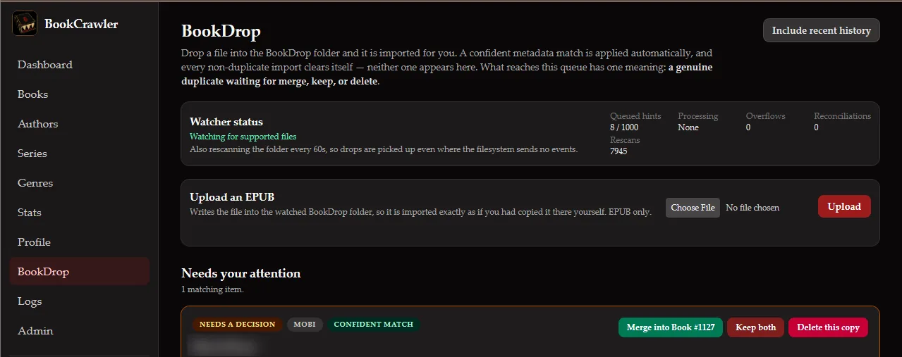
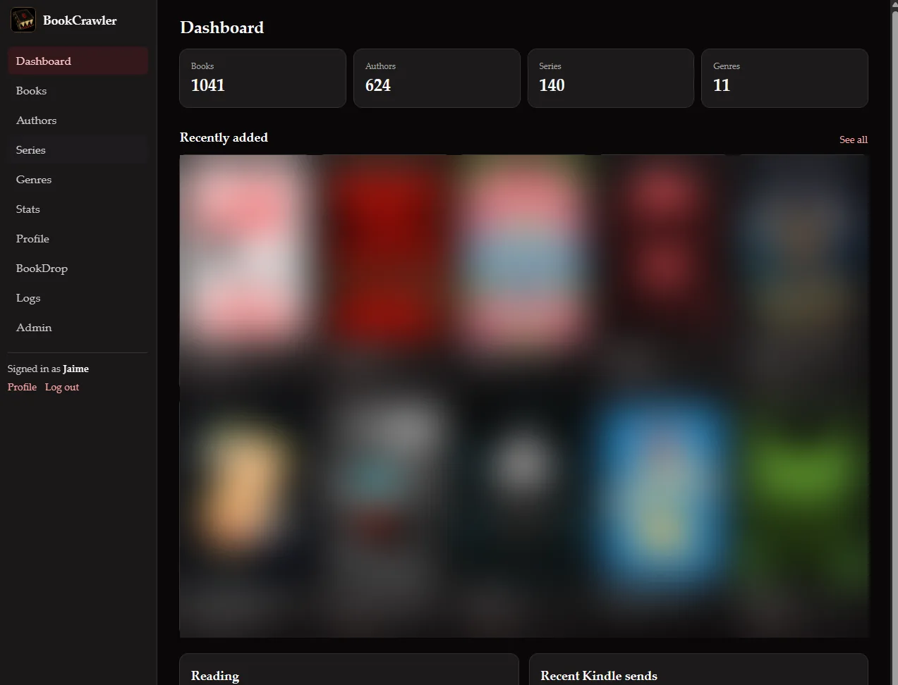
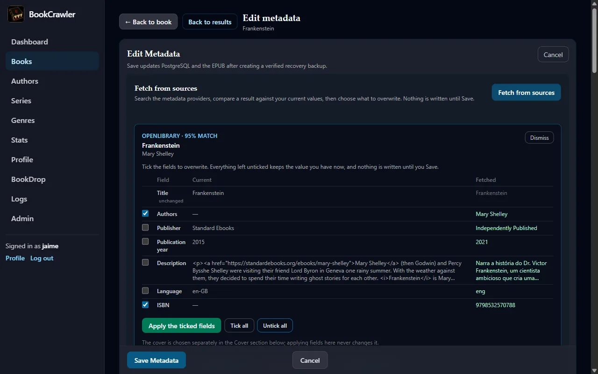
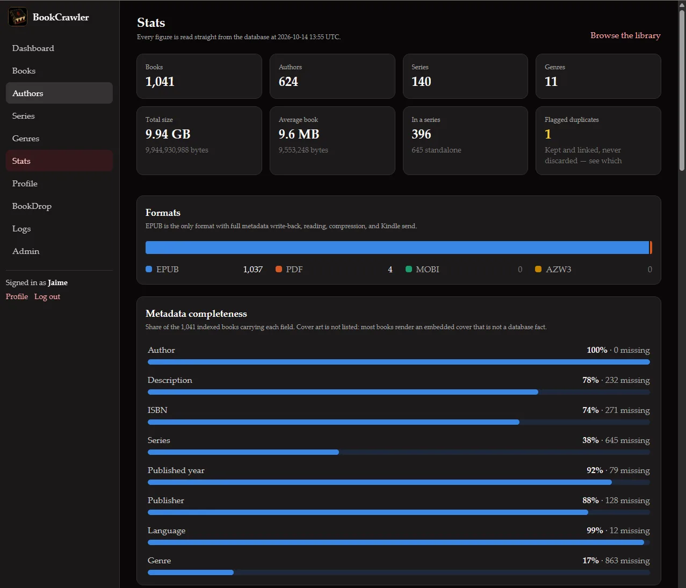
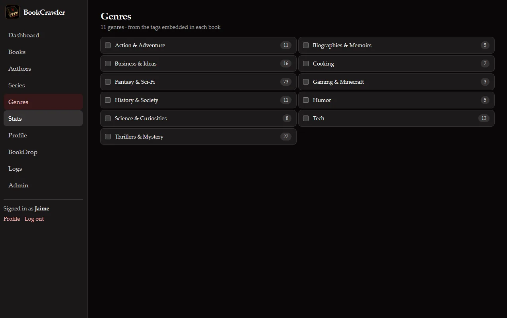
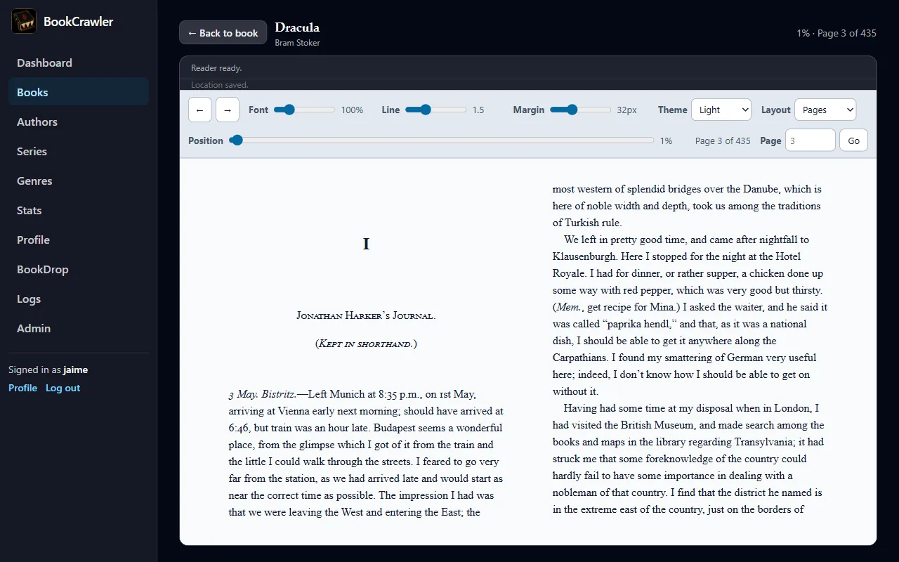
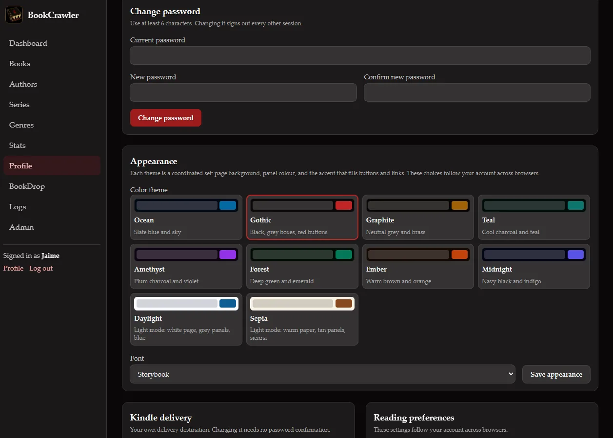
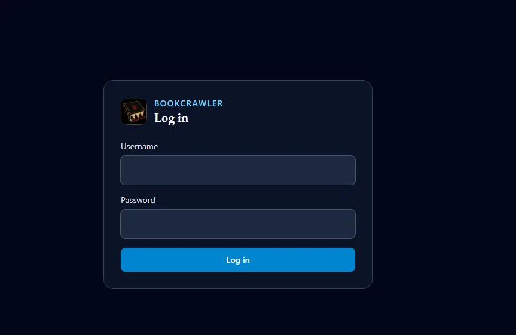
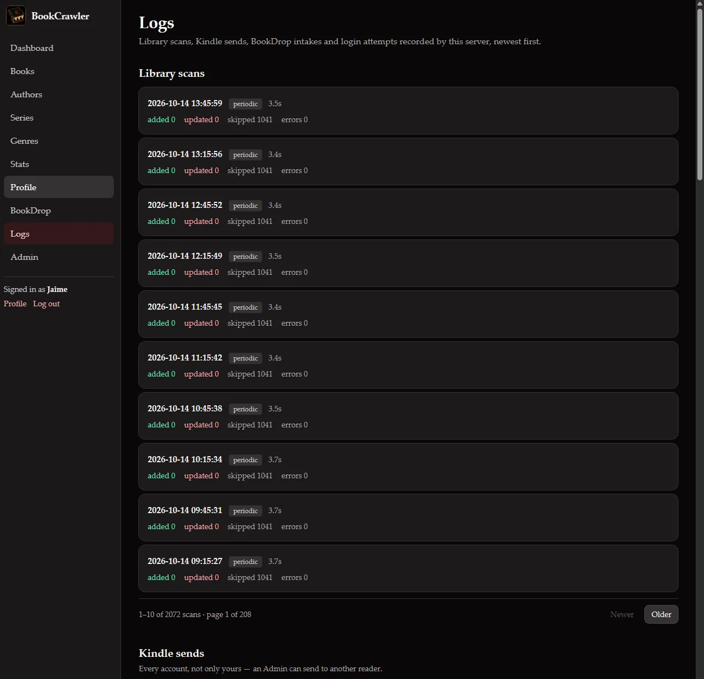

BookCrawler
The ebook library manager I wrote to replace Calibre-Web Automated, built around the book files instead of a database sitting next to them.
Self-built ebook library, metadata write-back, send to Kindle.
FastAPI · PostgreSQL · HTMX · Foliate.js
- Status
- Live
- Library
- 1,000-plus books
- Metadata sources
- 4
- Automated tests
- 600-plus
Why I built it
The Calibre and Kindle setup write-up ends with a lesson: exhaust the open source options before letting "I could build this" get momentum. I took that seriously. I spent a few months living with the options I'd picked, tried the ones I hadn't, and kept a list of what each one got wrong.
Calibre-Web Automated (CWA) did its job, but three things kept coming up. Editing a book's metadata sent me back to page one of the library, so fixing ten books meant scrolling back to my place ten times. When a Kindle send failed, nothing in the app said so, and I found out when the book never showed up. And CWA's SQLite database locked up on me more than once. I trialed BookOrbit, which had the library UI I wanted, and Grimmory, which had the best metadata picker I'd used. Grimmory also lost my scroll position after every edit, and it was worse than CWA about it, because it landed somewhere random instead of at the top. Its send failures were logged on the server and invisible in the app.
By then the list was specific enough to build against. Every tool I'd tried covered some of it, and none covered the parts I cared about most. The format conversion that made CWA worth choosing turned out to be the part I barely used, which comes up again below.
What it is
BookCrawler is a self-hosted web app that manages my ebook library. It scans the library folder, reads the metadata embedded in each EPUB, fetches better metadata from four outside sources, and writes corrections back into the EPUB file itself. It sends books to a Kindle by email, compresses the ones too big to send, and opens books in the browser with a built-in reader that remembers your place per account. It also serves an OPDS catalog, so reading apps on a phone can browse and download from the library directly.
The front half of the pipeline didn't change. I still search in Shelfmark, the download still lands on a seedbox, and rclone still copies new books home every fifteen minutes. What changed is where they land. The rclone script drops them into a watched folder called BookDrop. BookCrawler reads each new file, searches the metadata sources for a match, and moves the book into the library. If the best match is a strong one, its metadata is written into the book right away without asking. Anything less comes in with the metadata the file already had, and I can fix it from the book's page later. The one thing that waits for me is a probable duplicate. It stays out of the library, in a review queue, until I choose to merge it, keep both, or delete it.

It runs as two containers in my homelab: the app and its PostgreSQL database. It's written in Python with FastAPI, and the pages are rendered on the server with HTMX, so there's no front-end framework to build or keep updated. The repo is private for now.


The files are the source of truth
The requirement I cared most about came straight from CWA: when I fix a book's metadata, the fix has to land in the EPUB file, not just in the app's database. The file is what gets emailed to the Kindle and what any other reader app sees. If the app shows a corrected title while the file still carries the wrong one, the fix only exists in the app.
So every save writes into the book. Before BookCrawler touches an EPUB, it copies the original to a backup folder outside the library and verifies the copy against the original's hash. Then it edits only the metadata block and the cover, leaves the rest of the archive alone, re-reads the new file to confirm it's valid, and only then commits the change to the database. If the database step fails, the backup goes back in place.
Editing is compare-and-choose. I fetch candidates from the four sources, see each one beside the book's current values, and pick field by field what to take. Nothing is written until I hit Save. Fields can be locked, per book or as a library-wide default, so a later fetch can't quietly undo a correction I made by hand. The four sources (Hardcover, Goodreads, Google Books, and OpenLibrary) are queried at the same time and independently. One being down never blocks the others, and each reports why it came back empty: rate limited, blocked, timed out, or unreachable.



Compression instead of conversion
Before writing any code I counted what was in the library. It held 97 books at the time. Three were MOBI files, the format CWA's conversion existed for. Seven were EPUBs too large to email to a Kindle, every one of them an image-heavy nonfiction book: cookbooks, illustrated history, illustrated science. Conversion was solving a problem I had three times, and size was the one I kept hitting.
Gmail refuses attachments over 25 MB, and the largest book in that set was 195 MB. My old workaround was opening each one in Calibre's editor and running its lossy image compression by hand. That option isn't available from Calibre's command line, so BookCrawler does it directly. It re-encodes the JPEGs inside the EPUB at stepped quality levels (55, then 45, 35, and 30) and then starts capping image size, from 2400 pixels down to 1200. It stops at the first result under the limit. All seven books made it under 25 MB, and six of them never needed resizing. The 195 MB book came out at 24 MB. In production, a 39 MB book with 130 images compressed to 22 MB and delivered.
The compressed copy is Kindle-only. It's stored separately, keyed to the exact source file and the current size limit, so editing the book or raising the limit can't reuse a stale copy. The book in the library is never touched. The few MOBI and PDF files still show up in the library as real entries you can download. They just can't be edited, sent, or read in the browser, and the app says why instead of hiding them.
Two readers, two roles
My wife uses the library too, so accounts were part of the plan from the start. There are two roles. Admin, which is me, manages metadata, users, the review queue, and mail settings. Reader can browse, search, download, read in the browser, mark books read, and send to their own Kindle. Each account has its own Kindle address, read status, and reading position, so we can both be partway through the same book without stepping on each other.
The mail settings live in the app, encrypted, and take effect without a restart. Sends are queued and tracked through each step, and a failure shows its reason on the book page. The app is also careful about what success means. "Accepted" means Gmail took the message, not that the book reached the Kindle, and the app says exactly that. Amazon converts and delivers on its own schedule, and a large illustrated book can take an hour.



How it was built
I planned it in phases, each with its own detailed plan and a done-when check that had to pass before the next phase started: the scanner first, then metadata fetching, Kindle sending, the library UI, the metadata editor, accounts and roles, the reader, BookDrop, a polish and testing phase, and finally deployment. Each phase left a working app behind it, so I could have stopped at any point and kept what I had.
Testing ran against copies of real books, never the live library. After every round I checked the real library, BookDrop folder, and config folder against a manifest of file sizes and hashes to confirm nothing had changed. The automated suite runs with warnings treated as errors and no skipped tests, and it's past 600 tests now.
The polish phase ended differently on purpose. Instead of closing on an automated check, it closed when I was satisfied with the app after using it against my real library. That took six rounds of hands-on walkthroughs and fix passes, and I logged 125 findings along the way. Some were bugs. Most were the kind of thing you only notice by using the app: how titles sort, where the series number sits on a card, what happens to a duplicate, how the reader turns pages. The phase ended with a permission review of every route to make sure a Reader account couldn't reach anything meant for Admin.
The hiccups
Sort titles hid junk. EPUBs can carry their own sort title, and BookCrawler used to trust it. Some of mine held a bare ISBN, and one held the full source filename. Both sort ahead of every real title, so the library opened on two random books. Others kept "The" at the front while their neighbors dropped it, so a book's position depended on its publisher. Now the sort order comes from the title itself, with one rule for every book: drop a leading "the", "an", or "a". Nothing inside a file can override it.
Fifteen books were published in the year 101. Calibre writes 0101-01-01 into a book's date field to mean "unknown," and my year parser read it as a real year. Six other books showed their language as UND, the official code for "undetermined." Both values are now thrown out when a book is read, and a migration cleared the ones already stored. That second part mattered, because the scanner skips files that haven't changed, so the bad values would otherwise have stayed forever.
Two metadata sources broke on the same day. Goodreads has no public API, so BookCrawler's Goodreads integration is unofficial and depends on how their website is put together. One day Goodreads moved the piece it depended on, and every Goodreads fetch failed until I updated the client to look in the new place. The same day I found out why Google Books had been rate-limiting me from the start. Google's shared quota for callers without an API key is zero, so every anonymous search fails. Adding a free key fixed it. I also changed how a rate limit shows up in the app, so it reads "rate limited" instead of a generic error.
Imported books never left the drop folder. Three books sat in BookDrop after they'd been imported, and the logs filled with an error on every sweep. Three separate faults had stacked up. rclone runs as root, so the folders it created belonged to root, and BookCrawler could import the book but not delete the original. Then the import had rewritten the book's metadata, so the leftover original no longer matched its own queue entry, and BookDrop tried to mark an approved book as failed. Then the error handler itself crashed, so it retried the same thing on every sweep. The rclone script now hands the folders to the right owner after each pull. I fixed the two bugs and added a log line for the case that had been silent.
The folder watcher can't see the folder. This one is a repeat from the CWA write-up. On my server's storage, file change notifications don't reliably reach a container when something outside it writes the file, which is exactly how rclone delivers books. BookDrop has a file watcher, but the real intake is a sweep every sixty seconds, and the watcher only helps on the occasions it fires. CWA hit the same limit on a different machine, and the answer was the same both times: assume you'll have to poll.
What I'd do differently
I'd build the Logs page first. It came late, during deployment, because the same failure kept showing up: the app knew exactly what had gone wrong and threw that away before anyone could see it. A scan would skip a file and keep the reason to itself. A send would fail with a code but no explanation. Now every scan, send, BookDrop import, and login attempt is recorded with its reason, and the admin Logs page shows it all. That page has answered more questions than any other part of the app, and it would have saved hours if it had existed from the first phase.

One gap from that lesson is still open. When Gmail rejects a send, BookCrawler records which kind of rejection it was but drops the text of Gmail's reply, so the actual reason never reaches the screen. It's a small fix I haven't made yet.
What's next
BookCrawler is in daily use and stable. The next real addition is an MCP server, so an assistant can read the logs and look up books in the library without me screenshotting the admin pages. It will start read-only. Anything that edits a book or sends one will need an explicit confirmation step.